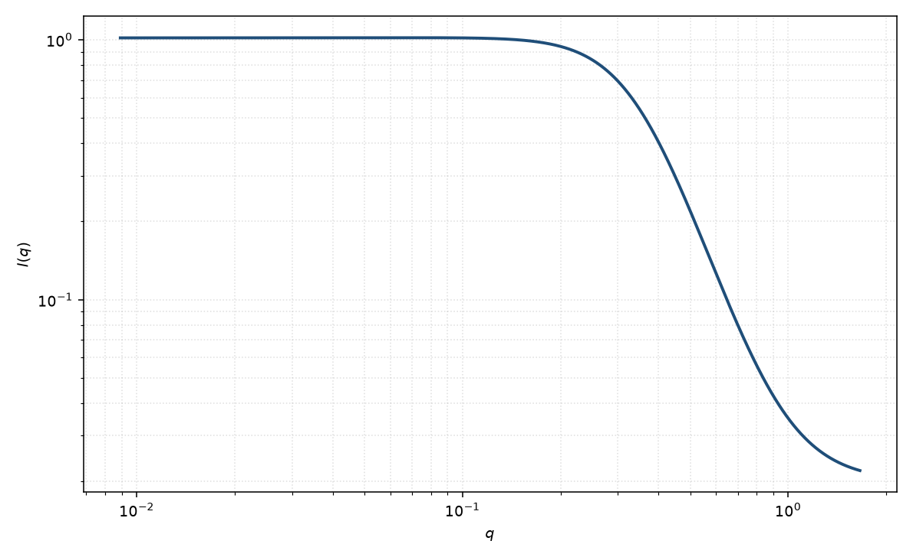

旋节分解
spinodal
适用场景
旋节分解早期，Cahn–Hilliard 给出一个随时间指数增长、峰位几乎固定的 $q_m$。静态测量上常把瞬时结构写成 $I\sim 1/[B+(q^2-q_c^2)^2]$。
后期粗化、峰位按 $t^{-1/3}$ 移动时，本页的早期式不够，应改用更完整的动力学或 Teubner–Strey 型宽峰。聚合物共混的热力学用 RPA 讨论 $S(q)$，再谈动力学。
物理图像
Cahn 的放大因子 $R(q)=-M q^2(\kappa q^2+f'')$ 在 $q_m=\sqrt{-f''/(2\kappa)}$ 最大。早期 $I(q,t)=I(q,0)\exp[2R(q)t]$。冻结某一时刻，曲线仍是环绕 $q_c$ 的峰。
取向：各向同性分解给出粉末环；外场可选择方向。磁性旋节（磁化分解）的 $q_m$ 由磁 Landau 系数决定。
示意图

核心公式
早期静态示意（峰位 $q_c$）
$$I(q)=\frac{A}{p+(q^2-q_c^2)^2}+B.$$动力学原式 $I(q,t)=I(q,0)\exp[2R(q)t]$，$R(q)=-Mq^2(\kappa q^2+f'')$，$q_m=\sqrt{-f''/(2\kappa)}$。
参数表
| 参数 | 符号 | 含义 | 单位 | 典型范围 |
|---|---|---|---|---|
| 峰位 | $q_c$ | Cahn 最大增长波矢 | Å$^{-1}$ | 由热力学与界面系数决定 |
| 宽度参数 | $p$ | 峰宽 | Å$^{-4}$ | 随时间早期可变窄 |
| 幅度 | $A$ | 与时间、迁移率有关 | 与强度单位一致 | 早期指数增长 |
| 标度 / 本底 | $\mathrm{scale}$, $B$ | 前置因子与常数本底 | 与强度单位一致 | 实验相关 |
拟合注意
取向：外场或衬底可使 $q_c$ 各向异性。粉末拟合只给环半径。
多分散初始涨落进入 $I(q,0)$，不改变 $q_m$。磁性与核旋节可以有不同 $q_c$。
可辨识性：单帧数据与 TS 宽峰几乎无法区分。必须有时间序列（峰高指数增长、峰位固定）才能声称早期旋节。
相近模型
- Teubner–Strey — 平衡或晚期双连续涨落。
- 无规相近似 — 聚合物共混的平衡 $S(q)$，旋节对应 $S(0)$ 发散。
- Debye–Anderson–Brumberger — 晚期无规两相，通常无峰。
参考文献
- Cahn, J. W. Phase separation by spinodal decomposition in isotropic systems. J. Chem. Phys. 1965, 42, 93–99. DOI: 10.1063/1.1695731
- Teubner, M.; Strey, R. J. Chem. Phys. 1987, 87, 3195–3200. DOI: 10.1063/1.453006